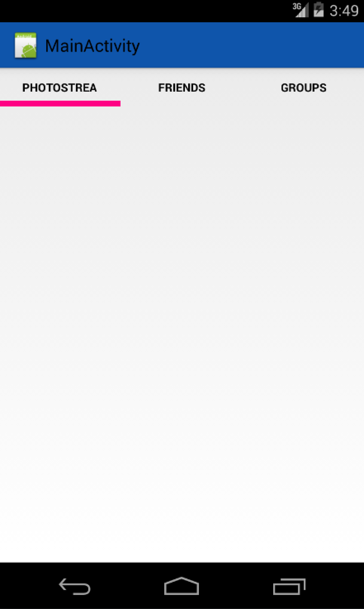

Adventures in Android Development
from hobby to play store

RoidRage
- Released in July 2011
- Avg. rating 4.57
- 493,124 downloads
- ~ 2 months

Glimmr
- Released in September 2012
- Avg. rating 4.36
- 102,227 downloads
- ~ 3 months
Now Open Source
Why write an app?
I could do better than that...
A lot of Android apps suck
Getting Started

Initial Commit
android.app.Activity;
One Fragment
android.app.Fragment;
Viewpager
android.support.v4.view.ViewPager
Style Guide

Android has great libraries
Picasso.with(context).load("http://i.imgur.com/DvpvklR.png").into(imageView);
Network Retries
Tape
http://square.github.io/tape/
Feedback
Summary
- Start Simple
- Don't reinvent the wheel
- Have fun
@brk3
github.com/brk3
brk3.github.io